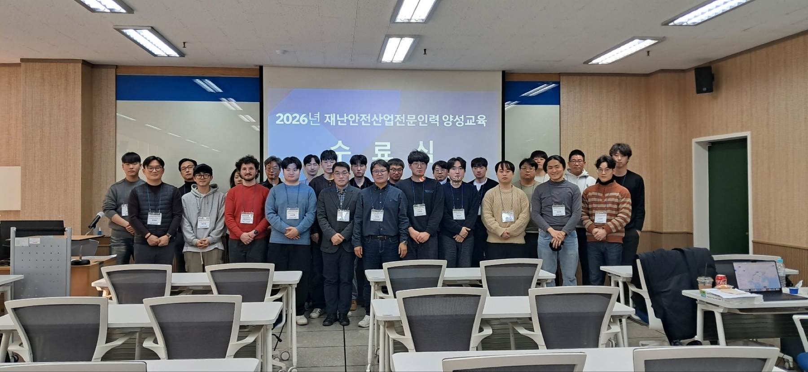
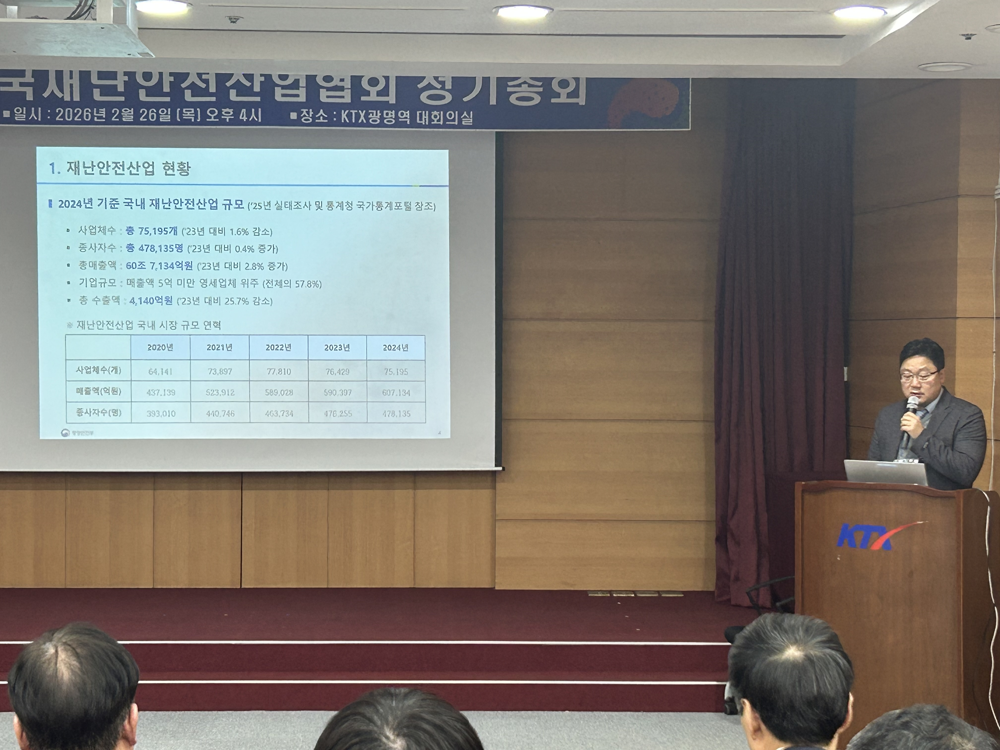
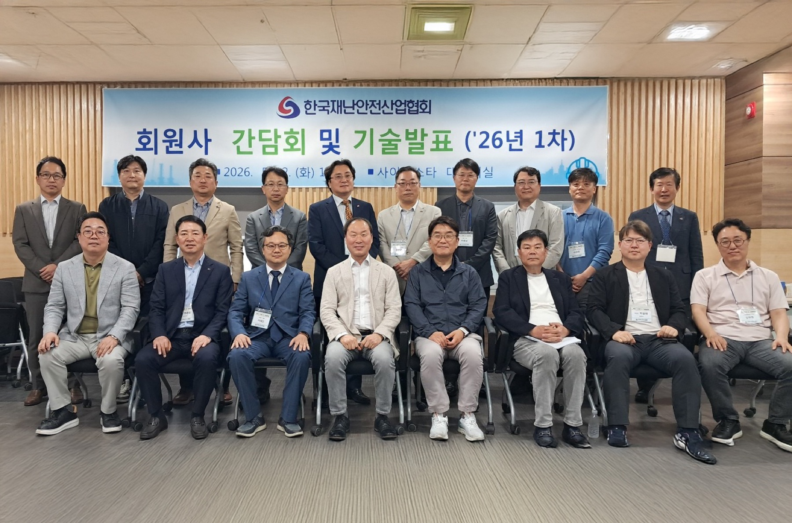
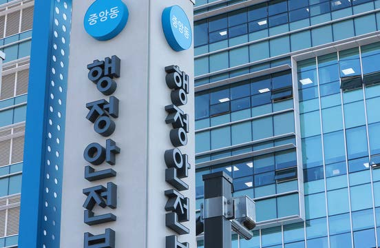
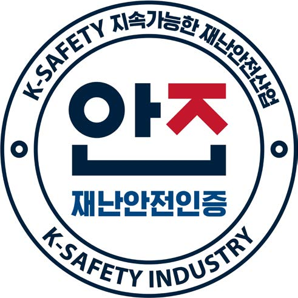
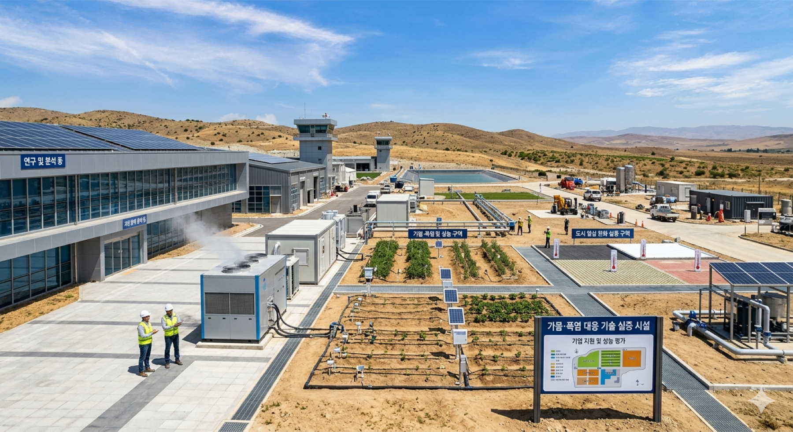
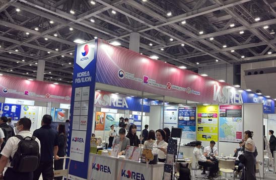
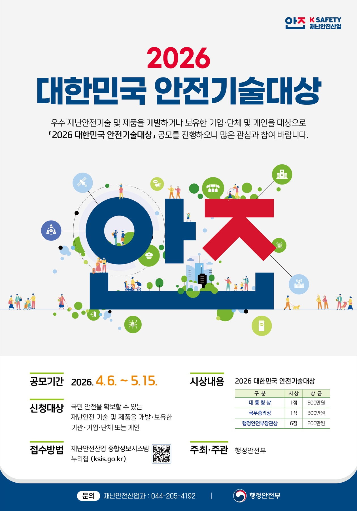
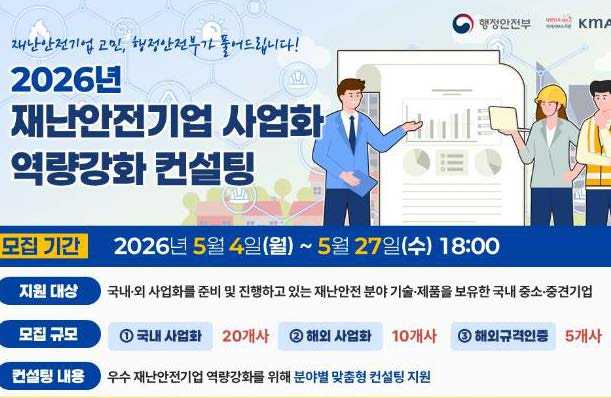

01
한국재난안전산업협회, 전문인력 양성교육 운영
한국재난안전산업협회는 2월 3일부터 5일까지 한국폴리텍대학 서울정수캠퍼스에서 제1차 재난안전산업 전문인력 양성교육을 운영했다. 재난안전산업 진흥정책, 연구개발, 기술사업화 등을 중심으로 산업계·연구기관·공공기관 종사자 27명이 수료했다.

2026년 상반기 재난안전산업 분야 굵직한 정책과 사업들
한국재난안전산업협회는 2월 3일부터 5일까지 한국폴리텍대학 서울정수캠퍼스에서 제1차 재난안전산업 전문인력 양성교육을 운영했다. 재난안전산업 진흥정책, 연구개발, 기술사업화 등을 중심으로 산업계·연구기관·공공기관 종사자 27명이 수료했다.


한국재난안전산업협회는 2월 26일 KTX 광명역 대회의실에서 정기총회를 개최했다. 2025년 사업실적과 결산, 2026년 사업계획·예산안이 의결됐으며 재난안전 AI·데이터위원회가 공식 출범했다.
5월 12일 ‘재난안전 AI·데이터 활용의 현주소’를 주제로 기술발표회가 열렸다. 영상분석, 데이터 기반 위험예측, 시설물 안전관리, 디지털 전환 사례가 소개됐으며 AI·데이터 기반 산업 혁신 방안이 공유됐다.



행정안전부는 상반기 재난안전제품 인증 신청을 접수하고 인증예정제품 14개를 공고했다. 인증 제품은 공공부문 수의계약, 조달우수제품 심사 가점, 인증마크 표시 등 다양한 혜택을 받을 수 있다.
기후변화로 심화되는 가뭄·폭염에 대응하기 위한 특화 진흥시설 조성 지역을 공모했다. 시설은 기업 기술·제품의 성능시험과 평가, 현장 실증, 사업화를 일괄 지원하며 2028년까지 총 100억 원이 지원될 예정이다.


베트남 씨큐텍과 일본 리스콘 도쿄에서 통합한국관을 운영한다. 선정 기업에는 부스 임차료·물류비와 수출 상담회 참여를 지원하고 해외 온라인 판매망 입점, 구매자 대상 투자설명회도 함께 추진한다.
행정안전부와 경찰청은 재난안전·치안 분야 유망기업 지원을 위해 200억 원 규모의 국민안전산업펀드를 처음 조성한다. 정부 출자 100억 원과 민간·지방정부 매칭 100억 원을 더해 연내 기업 투자를 시작할 방침이다.

서면심사 결과 17건이 선정됐으며 종합심사를 거쳐 8점이 최종 수상작으로 결정된다. 대통령상 1점, 국무총리상 1점, 행정안전부장관상 6점과 총 2,000만 원의 상금이 수여된다.
국내·해외 사업화 역량 강화와 해외규격 인증 취득 분야로 나눠 35개사를 대상으로 1:1 맞춤형 컨설팅을 지원한다. 해외규격 인증비와 시험 접수비 일부도 함께 지원한다.
